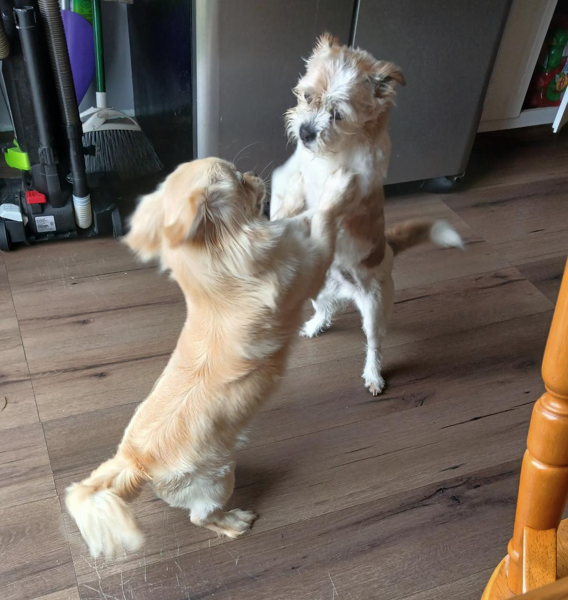
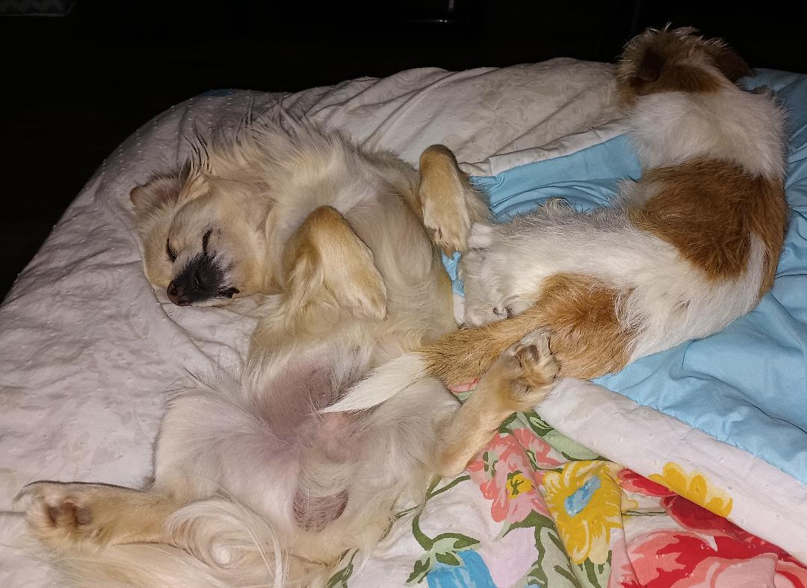
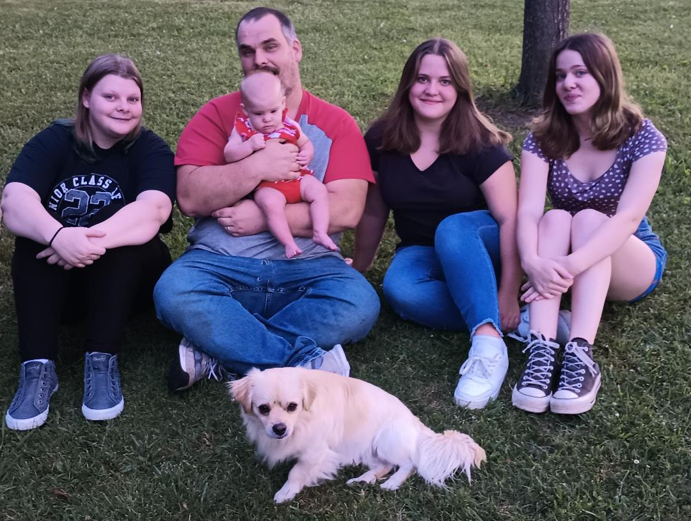

From Rescue to Adoption: Biscuit
All About Biscuit
Biscuit is a long haired Dachshund-Mix. He is 3 years old and very energetic. He loves to chase small tennis balls and squirrels. His legs may be short and stubby, but don't let that fool you. He can probably outrun any show dog any day of the week. He is very skittish of bigger dogs but loves other dogs that are his size. His favorite place to sleep is at the top of my husbands head just above the pillow.
How we got Biscuit:
We got Biscuit when he was just a few weeks old. My husbands Aunt found him and his sister at an abandoned house. His sister was quickly adopted so we were left with Biscuit. Our older Shih Tzu (Sugar) really took a liking to him. She was 10 years old at the time and never liked other animals. So when she started playing with him we knew we had to keep him. The two have been inseperable ever since.
 How I work with Biscuit
As you can see, Biscuit has a lot of hair. To be honest, the pictures do not do it justice. His tail is the equivalent of a teenage girls pony-tail from the 80's. His hair is thick and fine. He required grooming every other week at the least. When I realized this, I quickly invested in a HICOZY pet grooming kit/vacuum. This reduces his dander and keeps his hair shiny and clean and at a manageable length.
